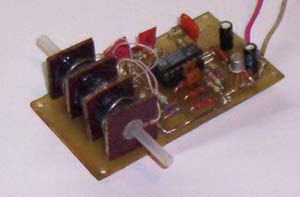
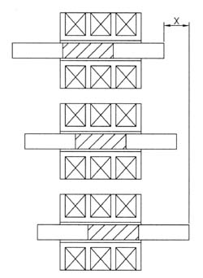
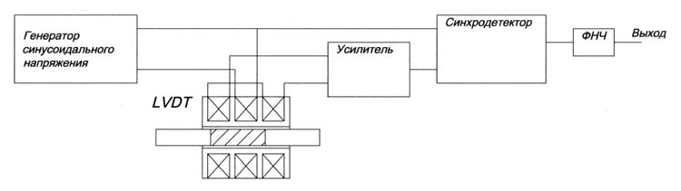
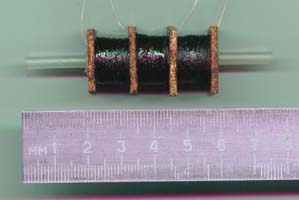
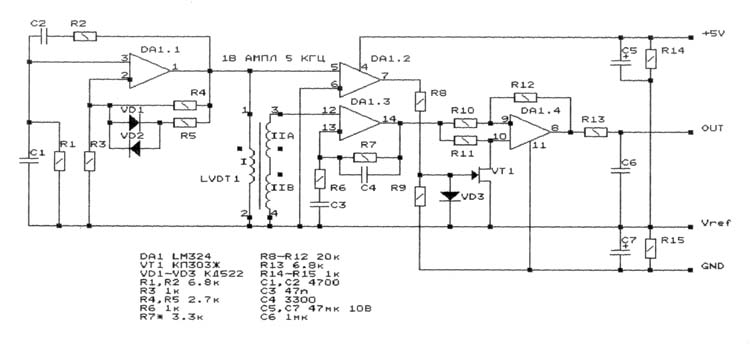
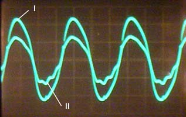
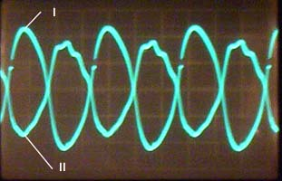

Датчик абсолютных
линейных перемещений диапазона 0 - 10 мм
с линейным переменным дифференциальным трансформатором

Введение
Хотя линейный переменный дифференциальный трансформатор (LVDT - linear variable differential transformer) применяется в датчиках абсолютных перемещений с первой половины XX века, его популярность остается по-прежнему довольно высокой. Основные достоинства датчиков с LVDT: простота конструкции первичного и электронного преобразователей, хорошее разрешение, линейность и воспроизводимость, широкий диапазон рабочих температур, отсутствие движущихся электрических контактов и, как следствие, долговечность. Достаточно легко сконструировать LVDT для измерения линейных перемещений в диапазоне 0 ... 10 см и более, а также угловых перемещений в диапазоне 0 ... 1200.
Конструкция первичного (LVDT) и электронного преобразователей
Базовая конструкция LVDT состоит из трех соосных катушек, намотанных на каркасе с центральным отверстием (рис. 1). В отверстии каркаса располагается способный перемещаться в осевом направлении шток с ферромагнитным сердечником. Центральная катушка служит обмоткой возбуждения. На нее подается напряжение возбуждения синусоидальной формы. Боковые катушки, включенные по дифференциальной схеме, играют роль сигнальной обмотки. Когда ферромагнитный сердечник находится в центре (нулевое положение), выходное напряжение сигнальной обмотки приблизительно равно нулю. Когда сердечник смещается в любую сторону относительно нулевого положения, амплитуда выходного сигнала возрастает, пока сердечник не достигнет некоторого крайнего положения. Фаза выходного напряжения относительно напряжения возбуждения равна 0 или 1800 в зависимости от направления перемещения сердечника от нулевого положения. Приблизительный диапазон измерения перемещений (X) соответствует ходу штока из одного крайнего положения в другое.

Рис. 1. Конструкция и схема работы LVDT.
Электронный преобразователь для работы с LVDT может быть построен по блок-схеме, приведенной на рис. 2. Обмотка возбуждения подключается к генератору синусоидального сигнала. Напряжение с сигнальной обмотки, амплитуда и фаза которого зависят от положения ферромагнитного сердечника по отношению к катушкам, усиливается (при необходимости) и подается на синхродетектор. Сигнал с выхода синхродетектора подается на фильтр низких частот (ФНЧ) и далее используется по назначению.

Рис. 2. Блок-схема электронного преобразователя сигнала LVDT.
Практическая реализация датчика
Чертежи первичного преобразователя: LVDT_011.rar (~13 Кбайт). Внешний вид преобразователя показан на рис. 3.

Рис. 3. Внешний вид LVDT.
Для работы с LVDT могут использоваться специализированные микросхемы, например, AD598/698 (Analog Devices) или NE5521 (Philips). Однако первая стоит довольно дорого (около 50 $), а вторая, по слухам, снята с производства по причине утраты маски. Поэтому в ряде случаев может быть актуальной разработка собственных схем электронных преобразователей на дискретных элементах. На рис. 4 представлен один из вариантов схемы.

Рис. 4. Схема электрическая принципиальная электронного преобразователя сигнала LVDT.
На операционном усилителе (ОУ) DA1.1 (LM324) собран генератор синусоидального напряжения частотой 5 кГц с амплитудным значением приблизительно 1 В. Это напряжение подается на обмотку возбуждения I LVDT1. На рис. 5 показаны осциллограммы сигналов на обмотке возбуждения (I) и сигнальной обмотке (IIA + IIB) при двух крайних положениях штока (ферромагнитного сердечника).
а)

б)
Рис. 5. Сигналы на обмотке возбуждения и сигнальной обмотке LVDT при крайних положениях ферромагнитного сердечника (I - обмотка возбуждения: 0.5 В/дел., 50 мкс/дел., II - сигнальная обмотка: 0.2 В/дел, 50 мкс/дел.).
Напряжение с сигнальной обмотки LVDT1 подается на усилитель DA1.3 с полосовым фильтром. На ОУ DA1.2, DA1.4 собран синхродетектор, к выходу которого подключен ФНЧ на элементах R13C6. Для питания электронного преобразователя используется однополярный источник напряжением +5 вольт. Потребляемый ток не превышает 4 мА. Диапазон изменения выходного напряжения (между контактами OUT и Vref) составляет -0.6 ... +0.6 вольт, что соответствует диапазону измеряемых перемещений 0 ... 12 мм (от одного крайнего положения штока до другого), то есть чувствительность датчика в среднем составляет 100 мВ/мм.
Вышеприведенная конструкция датчика перемещений разрабатывалась для измерений с точностью не хуже 10 %, но при необходимости достаточно легко может быть достигнута точность измерений 1 % и даже выше.
Расчет катушек LVDT производился с помощью программы Coil [1].
Состояние разработки:
Изготовлен пробный образец датчика, произведены испытания.
Ссылки:
04.10.2005
16.06.2010
Альтернативные источники
энергии
Компьютеры и
Интернет
Магнитные поля
Механотронные системы
Перспективные
разработки
Электроника и
технология